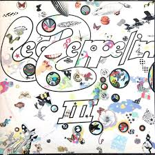
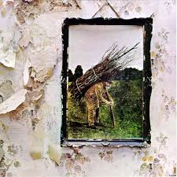

|
Led Zeppelin (1969)
- "Good Times, Bad Times" (Page/Bonham/Jones) 2:47
- "Babe I'm Gonna Leave You" (Page/Anne Bredon) 6:43
- "You Shook Me" (Dixon/Lenoir) 6:30
- "Dazed and Confused" (Page/Jake Holmes) 6:26
- "Your Time Is Gonna Come" (Jones/Page) 4:35
- "Black Mountain Side" (instrumental)(Jansch/Page) 2:06
- "Communication Breakdown" (Page/Bonham/Jones) 2:30
- "I Can't Quit You Baby" (Dixon) 4:43
- "How Many More Times" (Page/Bonham/Jones) 8:33
|
Led Zeppelin II (1969)

- "Whole Lotta Love" (Page/Plant/Jones) 5:34
- "What Is and What Should Never Be" (Page/Plant) 4:46
- "The Lemon Song" (Page/Plant/Jones) 6:20
- "Thank You" (Page/Plant) 4:50
- "Heartbreaker" (Bonham/Jones/Page/Plant) 4:14
- "Living Loving Maid (She's Just a Woman)" (Page/Plant) 2:39
- "Ramble On" (Page/Plant) 4:34
- "Moby Dick" (Bonham/Jones/Page) 4:20
- "Bring It On Home" (Page/Plant) 4:18
|
Led Zeppelin III (1970)

- "Immigrant Song" (Page/Plant) 2:24
- "Friends" (Page/Plant) 3:54
- "Celebration Day" (Page/Plant/Jones) 3:30
- "Since I've Been Loving You" (Page/Plant/Jones) 7:23
- "Out On the Tiles" (Page/Plant/Jones/Bonham) 4:07
- "Gallows Pole" (trad. arr. Page/Plant) 5:00
- "Tangerine" (Page) 3:11
- "That's the Way" (Page/Plant) 5:40
- "Bron-Y-Aur Stomp" (Page/Plant/Jones) 4:17
- "Hats Off to (Roy) Harper" (trad.) 3:40
|
Led Zeppelin IV (1971)

- "Black Dog" (Page/Plant/Jones) - 4:56
- "Rock and Roll" (Page/Plant/Jones/Bonham) - 3:41
- "The Battle of Evermore" (Page/Plant) - 5:53
- "Stairway to Heaven" (Page/Plant) - 8:02
- "Misty Mountain Hop" (Page/Plant/Jones) - 4:40
- "Four Sticks" (Page/Plant) - 4:46
- "Going to California" (Page/Plant) - 3:32
- "When the Levee Breaks" (Page/Plant/Jones/Bonham/Memphis Minnie) - 7:10
|
Houses of the Holy (1973)
- "The Song Remains the Same" (Page/Plant) — 5:30
- "The Rain Song" (Page/Plant) — 7:40
- "Over the Hills and Far Away" (Page/Plant) — 4:53
- "The Crunge" (Bonham/Jones/Page/Plant) — 3:20
- "Dancing Days" (Page/Plant) — 3:44
- "D'yer Mak'er" (Page/Plant/Jones/Bonham) — 4:24
- "No Quarter" (Page/Plant/Jones) — 7:04
- "The Ocean" (Page/Plant/Jones/Bonham) — 4:32
|
Physical Graffiti (1975)
- "Custard Pie" (Page/Plant) (4:16)
- "The Rover" (Page/Plant) (5:40)
- "In My Time of Dying" (Page/Plant/Jones/Bonham) (11:07)
- "Houses of the Holy" (Page/Plant) (4:05)
- "Trampled Underfoot" (Page/Plant/Jones) (5:37)
- "Kashmir" (Page/Plant/Bonham) (8:30)
- "In the Light" (Page/Plant/Jones) (8:51)
- "Bron-Yr-Aur" (Page) (2:07)
- "Down by the Seaside" (Page/Plant) (5:14)
- "Ten Years Gone" (Page/Plant) (6:56)
- "Night Flight" (Jones/Page/Plant) (3:40)
- "The Wanton Song" (Page/Plant) (4:10)
- "Boogie with Stu" (Bonham/Jones/Page/Plant/Stewart/Valens-*) (3:54)
- "Black Country Woman" (Page/Plant) (4:33)
- "Sick Again" (Page/Plant) (4:44)
|
Presence (1976)
- "Achilles Last Stand" (Page/Plant) 10:24
- "For Your Life" (Page/Plant) 6:25
- "Royal Orleans" (Bonham/Jones/Page/Plant) 3:00
- "Nobody's Fault But Mine" (Page/Plant) 6:30
- "Candy Store Rock" (Page/Plant) 4:12
- "Hots On For Nowhere" (Page/Plant) 4:44
- "Tea For One" (Page/Plant) 9:27
|
In Through the Out Door (1979)
- "In the Evening" (Jimmy Page, John Paul Jones, Robert Plant) - 6:52
- "South Bound Saurez" (Jones,Plant) - 4:15
- "Fool In the Rain" (Page,Jones,Plant) - 6:10
- "Hot Dog" (Page,Plant) - 3:20
- "Carouselambra" (Page,Jones,Plant) - 10:35
- "All My Love" (Jones, Plant) - 5:54
- "I'm Gonna Crawl" (Page,Jones,Plant) - 5:30
|
Coda (1982)
- "We're Gonna Groove" (Bethea, King) - 2:38
- "Poor Tom" (Page, Plant) - 3:02
- "I Can't Quit You Baby" (Dixon) - 4:18
- "Walter's Walk" (Page, Plant) - 4:31
- "Ozone Baby" (Page, Plant) - 3:36
- "Darlene" (Bonham, Jones, Page, Plant) - 5:10
- "Bonzo's Montreux" (Bonham) - 4:18
- "Wearing and Tearing" (Page, Plant) - 5:32
|